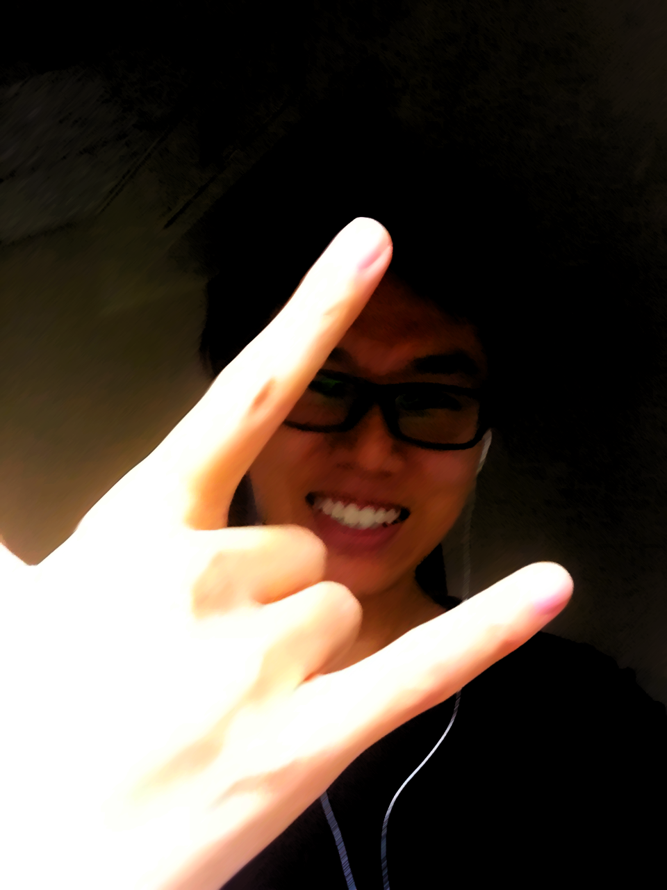
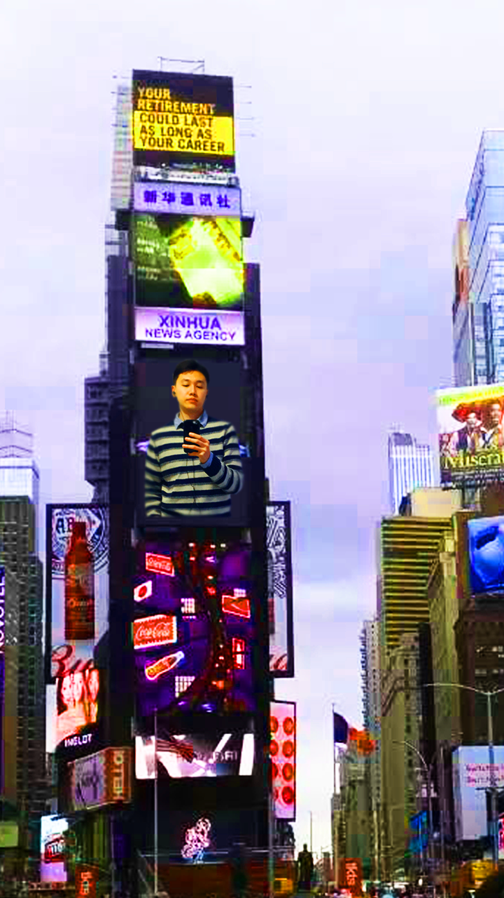

Zhen Tian
HOMEWORK 2

| The background of this img was created with a yellow circle and
an orange background. The gradual opacity fade of the yellow circle
was achieved with a mask, and the random patterns was created with
the smudge tool.
My photo was processed with the Stained Glass filter.
|

|
No filter was used in this img. Since the photo was a bit dark, I decided
to create a fancy atmosphere through image adjustments such as brightness,
contrast, exposure and saturation.
|

|
I found it is interesting to put myself in one of the displays in the Time Square.
The edge was processed with blur tool to make it looks a bit natural.
|